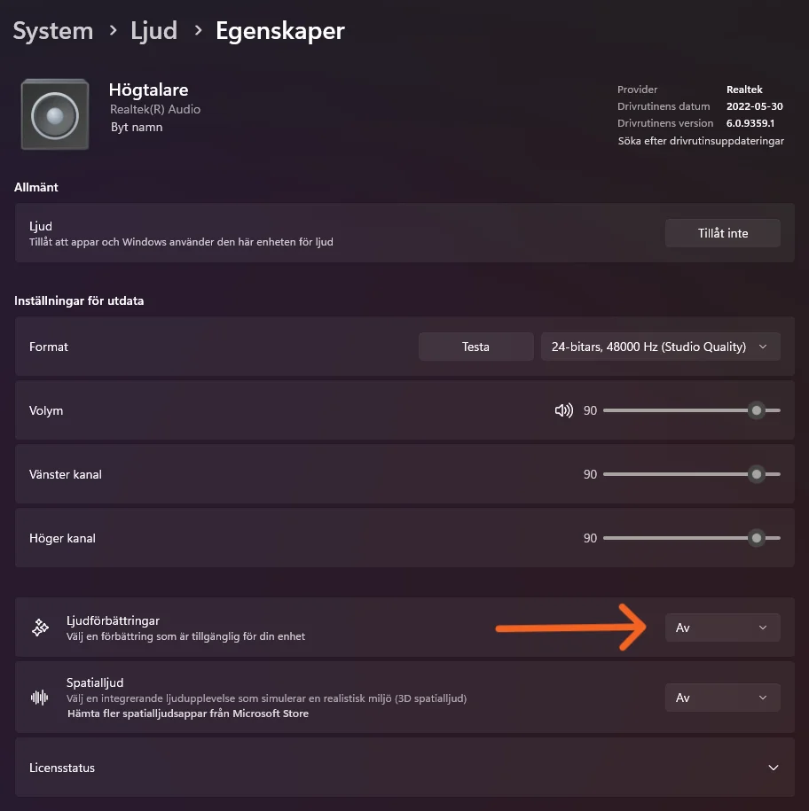

Settings For Great Audio
Sound enhancements:
Turn this setting off If you are using external audio device, ex. DAC.
Software control:
To make sure no background software Is running, uncheck this setting. Leave It on for spatial audio.
- Go to control panel
- Change to small icons
- Click on Sound
- Click on the speaker you are using
- You will find the setting in the advance menu as shown on image below
- After unchecked, click apply.
Spatial Audio:
Some users prefer having spatial audio on, can improve in some
scenario such as gaming or movies.
List of software recommended: